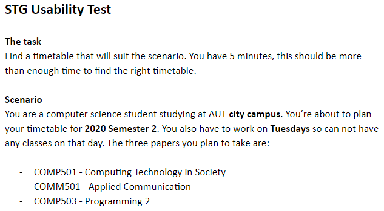
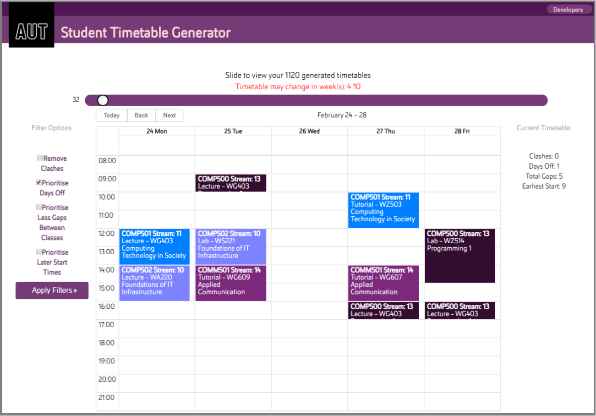

Usability Research
Quantitative vs Qualitative vs Lab Experiment
Quantitative:
Quantitative user testing is mostly used at the start (evaluation of the initial design) or at the end (evaluation of the redesign) of the design cycle, when the functioning product is ready. In these stages, sometimes multiple quantitative researches are conducted in order to see the clear comparison of the different version of the product. Through this benchmarking, testers are able to detect the level of improvement in the design with data analysis (Budiu, 2017).
In this testing, testers are to collect measurable numeric data that can be used in statistical analysis from a large pool of participants. This data is collected by recording screen movements, mouse clicks or time taken to complete tasks while observing the participants. The improvement of the new version can be measured by comparing the time and other numerical data and seeing how these differentiate between versions. (Gleason, 2019).
Qualitative:
Qualitative user testing can be used at any phase of the design cycle. It is a cost and time efficient way of gathering data compared to quantitative studies and for this reason it is considered to be more suitable to use in the redesigning stage, where the testers are trying to identify any design flaws in the product (Budiu, 2017).
In this testing, testers collect non-numerical data such as findings and the result of informal interviews that can uncover design flaws or strengths from a small pool of users. Users are given tasks to complete and are instructed to “think out loud” while navigating the site, and the researchers are to observe and record the narration. Through this exercise, the researchers are able to gain insight to what the users feel about each features of the product (Gleason, 2019).
Budiu (2017) states that there is a high chance of identifying 85% of the design flaws with only 5 subjects, given the product is not in the final stage. Therefore, it is efficient to repeat this process to discover any major problems that need to be fixed, with each version in the redesigning phase (Budiu, 2017).
Lab Experiment:
Lab experiments are conducted to prove theories and test hypothesis so the result of the experiment will either validate or reject the proposed hypothesis (Dumas & Redish, 1999). They are only ever conducted in labs and the scope of the lab experiments are exceptionally controlled as it is a good practice to test with a small set of variables (Seffah & Metzker, 2009).
With experiments, the researchers are able to isolate specific variables with high level of control, and measure the relationships among them. They can also be duplicated if further study is required, providing advanced conclusions. However, they are costly and require larger amount of subjects to draw more accurate results. Also, the experiments often do not represent the real-world, as the variables are tightly-controlled (Basili, 2007).
Chosen Usability Test
After some initial research it was clear that we needed to conduct a qualitative usability study, which aligns with the purpose of the study. By utilizing a qualitative study, we are able to have participants use the application to complete a task and watch them while they navigate the site, then complete an interview to get their thoughts. We chose to ask 10 participants to be involved in this process as we feel like anymore than this will give diminishing returns in terms of usable feedback.
We chose this technique because it allows us to gain additional data other than just numbers and metrics which will allow our team to identify common usability issues as well as finding improvements to these. This type of study is also quite flexible and somewhat informal. Participants are able to talk aloud as they are using the application and while we are watching them, we can pick up on cues that show their confusion, (such as the look on their face as they found something were unsure about or how frustrated they were getting while using the application and didn't know what to do.) From here we can ask them about those areas and get additional details about why they got stuck or what they were having trouble with during a post interview.
Method
From our research about the different types of studies we could conduct to check the usability of an application, we ended up choosing a qualitative usability study which consisted of the following steps.
1: We first set up a scenario that we wanted the participants to walk-through. This was to ensure that all of the functionality of the application is or can be used. We did this to get the most coverage of the application and to see if participants would actually be using the functionality or if it was easily missed or misused.
This scenario consisted of them choosing 3 papers that AUT offers from semester 2 of 2020. (Which ensures they use the selection filters as well as using the paper search to find specific papers). Participants had 5 minutes to find an ideal timetable before they were asked to stop. We chose 5 minutes because the team felt this was plenty of time to achieve the task and if participants went over this time, it showed some major usability issues.

From here they were required to search through the list of generated timetables and find one with a specific criteria, in this case they were looking for a tuesday off. This ensured they used the ‘slider’ which is a horizontal scroll bar to scroll through the generated timetables as well as the filters which sorted the results based on criteria (like days off).
2: We then created a set of post interview questions which we used on the completion of their task (or if they ran out of time). This consisted of 10 questions that were generally very open as we wanted to get their opinions without influencing their answers. This consisted of the following:
We chose these questions as a way to gather as many usability flaws that we could. We were also watching the participant while they were completing the scenario and if we saw them struggling or having confusion we noted this down and asked them about it during the post interview questionnaire.
E.g... We noticed you had trouble looking through the different timetables, could you tell us why you had so much trouble? By using the answers to these questions we will be able to perform some analysis of the frequency of their answers and what was a reoccuring theme. This is discussed further in the analysis section.
3: Before we used this scenario and interview above, we wanted to ensure the instructions were clear and participants would be able to run through it with little issues. We did this by conducting a pilot scenario where we got one participant to run through everything and ensure that the instructions were understood. (We didn’t record or count this as a participant). From this pilot we were able to see if 5 minutes was enough time, if the instructions were clear and if the questionnaire would provide enough feedback to create some suggestions for the developers. The conclusion of this pilot showed the team that we need to tweak the wording of the scenario to be more clear. Apart from this, we found that 5 minutes was more than enough time and the questions we asked at the end were informative enough to provide suggestions to the developers.
4: Once the team was happy with the scenario and the interview questions, we set up a computer in the R&D lab in WZ701 where we conducted all interviews and scenarios using the same computer in the same environment. We also ensured that all sessions were recorded using screen recording software so that we could go back and see how the participants were interacting with the application. By doing this, we were able to look back if we needed any clarification and to cross-reference against their interview answers. This was also useful as we could see exactly where participants were getting stuck and where they were spending the majority of their time.
Environment Setup
We wanted to use the same environment for all participants during the study for general consistency and best practice. This consists of the following constraints.
Execution
Once we had the environment and tests set up, we needed to start asking people if they wanted to be apart of the study. We used convenience sampling to find these participants, which consisted of people from the lab we were conducting the study in.
From here, we took them over to the machine we were using, explained to them what the basic idea of the application was and asked them to read the scenario. We also told all the participants to openly talk about what they were thinking while they were using the software, but they were not required to talk if they didn’t want to. We also mentioned that they can ask us questions throughout but we won't be able to answer anything until the end.
Once they were ready and knew what their task was, we opened us the screen recording software (Windows Game Bar) and let them run through the scenario unguided.
After the completion of the task or 5 minutes had elapsed, we asked them to stop and we immediately conducted the post interview. If they had any questions while using the application we wrote them down and asked them about their confusion during this time.